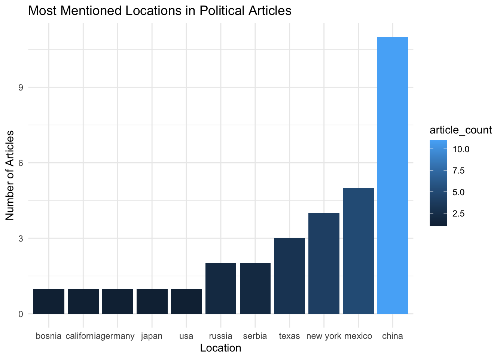
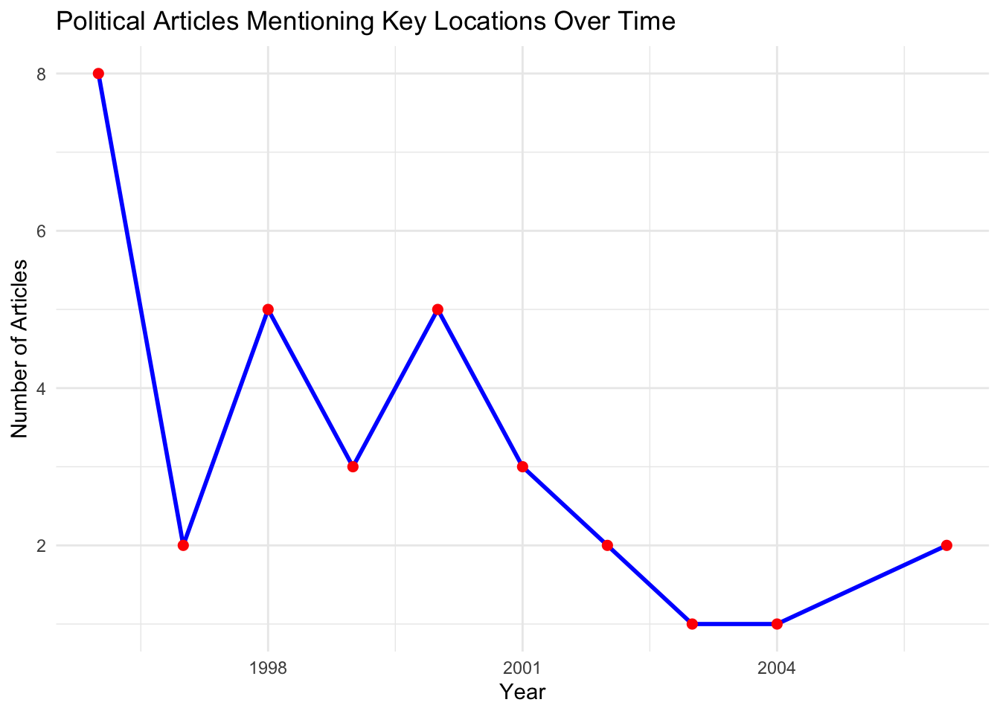

In today’s media landscape, the New York Times remains one of the most influential news outlets, shaping public discourse on politics and international affairs. To better understand how political topics are covered in NYT headlines, this analysis explores a dataset of article titles, focusing on mentions of key political terms and global locations. By identifying headlines that reference terms like “election,” “president,” or “congress,” and extracting country or region names, we can begin to map out how political attention is distributed across the globe and how it has evolved throughout time. This exploration provides insight into the geographic focus of political reporting, how frequently certain regions appear in headlines, and how this coverage has changed over time. Through a combination of text filtering, and location extraction the following analysis aims to uncover patterns in political narrative emphasis and international visibility in the New York Times.
Exploratory Analysis:
library(readxl)library(dplyr)library(tidyverse)library(lubridate)library(RTextTools)# Show the first few rows of the full dataset with all original variablesdata(NYTimes)head(NYTimes, 10)
Article_ID Date
1 41246 1-Jan-96
2 41257 2-Jan-96
3 41268 3-Jan-96
4 41279 4-Jan-96
5 41290 5-Jan-96
6 41302 7-Jan-96
7 41314 8-Jan-96
8 41333 10-Jan-96
9 41344 11-Jan-96
10 41355 12-Jan-96
Title
1 Nation's Smaller Jails Struggle To Cope With Surge in Inmates
2 FEDERAL IMPASSE SADDLING STATES WITH INDECISION
3 Long, Costly Prelude Does Little To Alter Plot of Presidential Race
4 Top Leader of the Bosnian Serbs Now Under Attack From Within
5 BATTLE OVER THE BUDGET: THE OVERVIEW; LEADERS IN HOUSE DROP G.O.P. PLAN ON U.S. WORKERS
6 South African Democracy Stumbles on Old Rivalry
7 Among Economists, Little Fear on Deficit
8 BATTLE OVER THE BUDGET: THE OVERVIEW; TALKS ON BUDGET ARE PUT ON HOLD AMID UNCERTAINTY
9 High Court Is Cool To Census Change
10 TURMOIL AT BARNEYS: THE DIFFICULTIES; Barneys Is Seeking Bankruptcy, Citing Fight With Partner
Subject
1 Jails overwhelmed with hardened criminals
2 Federal budget impasse affect on states
3 Contenders for 1996 Presedential elections
4 Bosnian Serb leader criticized from within
5 Battle over budget: Republican leaders abandon strategy of using closed Government offices
6 political violence in south africa
7 economists not afraid of a deficit
8 budget fight
9 census changes
10 barneys seeks bankruptcy
Topic.Code
1 12
2 20
3 20
4 19
5 1
6 19
7 1
8 1
9 20
10 15
Variables:
Article_ID - A unique numerical identifier for each article in the dataset
Date - The publication date of the article (usually in day-month-year format)
Title - The article headline as it appeared in The New York Times Subject A brief summary or annotation describing the main idea of the article
Topic.Code - A numeric code representing the article’s assigned policy topic or issue domain
# Load the NYTimes dataset and convert it to a tibble for easier handlingdata(NYTimes)as_tibble(NYTimes)
# A tibble: 3,104 × 5
Article_ID Date Title Subject Topic.Code
<int> <fct> <fct> <fct> <int>
1 41246 1-Jan-96 Nation's Smaller Jails Struggle To C… Jails … 12
2 41257 2-Jan-96 FEDERAL IMPASSE SADDLING STATES WITH… Federa… 20
3 41268 3-Jan-96 Long, Costly Prelude Does Little To … Conten… 20
4 41279 4-Jan-96 Top Leader of the Bosnian Serbs Now … Bosnia… 19
5 41290 5-Jan-96 BATTLE OVER THE BUDGET: THE OVERVIEW… Battle… 1
6 41302 7-Jan-96 South African Democracy Stumbles on … politi… 19
7 41314 8-Jan-96 Among Economists, Little Fear on Def… econom… 1
8 41333 10-Jan-96 BATTLE OVER THE BUDGET: THE OVERVIEW… budget… 1
9 41344 11-Jan-96 High Court Is Cool To Census Change census… 20
10 41355 12-Jan-96 TURMOIL AT BARNEYS: THE DIFFICULTIES… barney… 15
# ℹ 3,094 more rows
# This chunk filters articles that mention political topics (e.g. "election", "president", "congress") and extracts geographic keywords. It then counts how many political headlines include each location.NYTimesv2 <- NYTimes |>mutate(politics_mention =str_detect(Title,regex("election|vote|senate|president|congress|politics|congress|clinton|trump", ignore_case =TRUE))) |>mutate(title_word_count =str_count(Title,"\\S+")) |>mutate(location =str_extract(Title, regex("New York|California|Texas|France|Russia|China|Japan|Mexico|Bosnia|Serbia|Germany|UK|USA", ignore_case =TRUE)))|>mutate(location =str_to_lower(location)) |>filter(politics_mention ==TRUE, !is.na(location)) |>group_by(location) |>summarize(article_count =n(), .groups ="drop")|>mutate(location =fct_reorder(location, article_count))
#| fig-alt: “Bar chart showing the number of political headlines in the NYTimes mentioning each of several global locations. Locations are ordered by frequency, with darker fill indicating more mentions.”
# This chunk creates a Bar chart which depicts the most mentioned locations in political articlesggplot(NYTimesv2, aes(x = location, y = article_count, fill = article_count)) +geom_bar(stat ="identity") +labs(title ="Most Mentioned Locations in Political Articles",x ="Location",y ="Number of Articles") +theme_minimal()

This bar chart shows which geographic locations appear most frequently in political articles published by The New York Times. Each bar represents a specific location mentioned in political headlines, based on keywords like “election,” “vote,” “president,” etc. The data has been filtered to include only articles that reference both politics and one of several predefined countries or regions. The color gradient indicates the volume of mentions, making it easier to spot which places dominate the political conversation in NYT headlines.
#In this chunk, we extract the year from each article date and count how many political headlines occurred each year. This helps us track The New York Times political coverage volume over time.library(lubridate)NYTimesv3 <- NYTimes |>mutate(Date =dmy(Date), Year =year(Date),politics_mention =str_detect(Title, regex("election|vote|senate|president|congress|politics|congress|clinton|trump", ignore_case =TRUE)),title_word_count =str_count(Title,"\\S+"),location =str_extract(Title, regex("New York|California|Texas|France|Russia|China|Japan|Mexico|Bosnia|Serbia|Germany|UK|USA", ignore_case =TRUE))) |>filter(politics_mention ==TRUE, !is.na(location)) |>group_by(Year) |>summarise(article_count =n(), .groups ="drop") |>arrange(Year)
#| fig-alt:“Line chart showing the number of political articles in the NYTimes each year that mention major global locations. The line shows increases or dips in coverage volume over time.”
#In this chunk, we create a line chart that counts the amount of political article frequency by yearggplot(NYTimesv3, aes(x = Year, y = article_count)) +geom_line(color ="blue", size =1) +geom_point(size =2, color ="red") +labs(title ="Political Articles Mentioning Key Locations Over Time",x ="Year",y ="Number of Articles") +theme_minimal()

This line chart tracks the number of political articles published each year by The New York Times that mention at least one major global location. By focusing only on political headlines containing specific keywords and country names, this plot visualizes how global political focus in NYT coverage has shifted or intensified over time. Spikes or dips in the line may correspond to key events such as presidential elections, international conflicts, or geopolitical crises.
Citation:
Boydstun, A. E. (2013). Supplementary Information for: Making the News: Politics, the Media, and Agenda Setting. Retrieved from http://www.amber-boydstun.com/supplementary-information-for-making-the-news.html
Additional citation context:
Who collected the data? The dataset was compiled by Dr. Amber E. Boydstun, a political scientist and professor at the University of California, Davis. She gathered this data as part of her research for the book Making the News: Politics, the Media, and Agenda Setting, which examines patterns in media attention and agenda-setting processes.
Why it was collected? The primary aim of collecting this data was to analyze how policy issues gain prominence in media coverage, particularly focusing on the dynamics of news reporting by major outlets like The New York Times. The research sought to understand the factors influencing which issues are highlighted in the news and how this affects public discourse and policy-making.
Original source of the information: The data originates from a systematic content analysis of The New York Times front-page articles spanning from 1996 to 2006. Each article was coded for various attributes, including policy topics, framing, and prominence, to facilitate a comprehensive study of media coverage patterns.